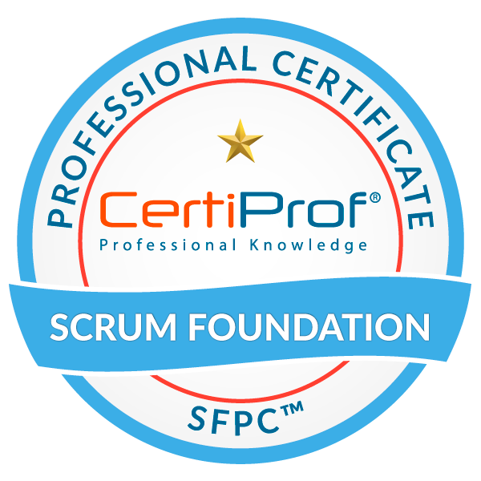

Emanuel Gomes Sr. Quality Assurance na RPE, em João Pessoa
Qualidade não é uma fase. É como o time trabalha.
Há 5 anos ajudo times ágeis a encontrar problemas cedo: no refinamento, no critério de aceite, no pipeline. Automatizo o que se repete e meço o que importa para o produto chegar estável em produção.
$ npx playwright test emanuel.spec.ts
describe('Emanuel Gomes, Sr. QA')
Como eu trabalho
Teste no fim do sprint descobre bug caro. Por isso entro cedo: participo do discovery, questiono requisitos ambíguos e escrevo critérios de aceite que o time consegue validar antes de codar.
Automação, para mim, é um investimento com retorno medido. Priorizo os fluxos que geram receita, mantenho a suíte rápida e trato teste instável como defeito.
Também cuido de quem chega: mentoria técnica, arquitetura de testes e um onboarding de QA que deixa a pessoa produtiva em dias, não em semanas.
Métricas que acompanho
Cada uma vira uma asserção no meu dia a dia.
expect(defectLeakage.critical).toBe(0)Nenhum bug crítico escapando para produçãoexpect(e2eCoverage.checkout).toBeGreaterThan(0.85)Cobertura E2E no fluxo principal de conversãoexpect(flakyRate).toBeLessThan(0.02)Suíte confiável, sem falso alarmeexpect(suiteDuration).toBeLessThan(budget)Feedback rápido no pipelineexpect(mttr).toBeDecreasing()Tempo de recuperação caindo a cada cicloexpect(automationROI).toBePositive()Automação que se paga
Trajetória
De trainee a Sr. QA em 5 anos, passando por consultoria, startup e meios de pagamento.
-
até hoje
Sr. Quality Assurance
RPE, Retail Payment Ecosystem
Estratégia de qualidade para o ecossistema de pagamentos: automação E2E e de API, testes de carga com k6 e métricas de qualidade acompanhadas com o time.
-
a
Analista de QA Pleno
Minsait
-
a
Analista de QA Pleno III
CertDox
Dois anos estruturando testes funcionais e automatizados de uma plataforma de documentos.
-
a
Analista de QA Pleno II
Cubos Tecnologia
-
a
Analista de QA Pleno I
Zak
-
a
Trainee e Analista de QA Júnior
MJV Tecnologia e Inovação
Onde tudo começou.
Formação
- Pós em Quality Assurance e RPAUNIESP
- Pós em Engenharia de SoftwarePUC Minas
- Análise e Desenvolvimento de SistemasUNINASSAU
- Técnico em InformáticaIFPB
Stack
Escolha um contexto para ver as ferramentas que uso nele.
- Cypress
- Playwright
- Selenium
- Robot Framework
- Cucumber (BDD)
- JUnit 5
- RestAssured
- k6
E2E web, BDD com o negócio e testes de carga nas APIs críticas.
- Postman
- Apidog
- Insomnia
- Swagger
- sMockin
- Pipedream
- ELK
Contratos, mocks de dependências e investigação de logs.
- GitHub Actions
- GitLab CI
- Jenkins
- Docker
- Kubernetes
- AWS
- Portainer
Testes rodando a cada push, em ambientes reproduzíveis.
- TypeScript
- JavaScript
- Java
- Python
- PHP
- PostgreSQL
- MySQL
- MongoDB
- Oracle
- Redis
- Supabase
Escrevo a automação na linguagem do time e valido direto no banco.
- Jira
- Confluence
- Notion
- ClickUp
- Miro
- Claude
- ChatGPT
- Gemini
IA para acelerar cenários complexos e otimizar scripts, sempre com revisão humana.
Projetos no GitHub
Carregando os repositórios atualizados mais recentemente…
Certificações e cursos
Cada item abre a credencial original para verificação.
Certificações por exame
-

Scrum Foundation Professional (SFPC)CertiProf, 2021 e 2022 - Fundamentos da LGPD (LGPDF)CertiProf, 2022
- Six Sigma Yellow Belt6sigmastudy, 2022
- Remote Work Professional (RWPC)CertiProf, 2023
Cursos e badges
Vamos conversar
Estou aberto a conversas sobre liderança de QA, arquitetura de testes e mentoria. Respondo mais rápido por e-mail ou LinkedIn.